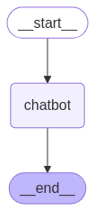

构建一个基本聊天机器人
在本教程中，构建一个基本聊天机器人
这个聊天机器人是后续系列教程的基础，在这些教程中，将逐步添加更复杂的功能 并在此过程中了解 LangGraph 的关键概念。让我们开始吧！
创建一个 StateGraph
现在可以使用 LangGraph 创建一个基本聊天机器人。这个聊天机器人将直接回复用户的消息。
首先创建一个 StateGraph 。一个 StateGraph 对象将聊天机器人结构定义为 状态机
- 添加 节点 来表示 LLM 和聊天机器人可以调用的函数
- 添加 边 来指定机器人应如何在这些函数之间进行转换
from typing import Annotated from typing_extensions import TypedDict from langgraph.graph import StateGraph, START from langgraph.graph.message import add_messages class State(TypedDict): # Messages have the type "list". The `add_messages` function # in the annotation defines how this state key should be updated # (in this case, it appends messages to the list, rather than overwriting them) messages: Annotated[list, add_messages] graph_builder = StateGraph(State)
现在可以处理两个关键任务
- 每个 节点 都可以 接收 当前 状态 作为输入，并 输出 状态的更新
对 消息 的更新将 追加 到现有列表而不是覆盖它
这得益于与 Annotated 语法一起使用的预构建 add_messages 函数
定义图时：第一步是定义其 状态 。状态 包括图的模式和处理状态更新的 reducer 函数
在我们的示例中，状态 是一个具有一个键：messages 的 TypedDict add_messages reducer 函数用于将新消息追加到列表中，而不是覆盖它 没有 reducer 注解的键将覆盖先前的值
要了解有关状态、reducer 和相关概念的更多信息，请参阅 LangGraph 参考文档
添加一个节点
接下来，添加一个“chatbot”节点。 节点 表示工作单元，通常是普通的 Python 函数
首先选择一个聊天模型：
import os from langchain.chat_models import init_chat_model os.environ["ANTHROPIC_API_KEY"] = "sk-..." llm = init_chat_model("anthropic:claude-3-5-sonnet-latest")
现在可以将聊天模型集成到一个简单的节点中
def chatbot(state: State): return {"messages": [llm.invoke(state["messages"])]} # The first argument is the unique node name # The second argument is the function or object that will be called whenever # the node is used. graph_builder.add_node("chatbot", chatbot)
注意 chatbot 节点函数 :
- 将当前 状态 作为 输入
- 返回一个包含更新的 消息 列表的 字典
- 键为 messages
这是所有 LangGraph 节点函数的基本模式
状态 中的 add_messages 函数会将 LLM 的响应消息 追加 到 状态中已有的消息之后
添加一个入口点
添加一个 入口 点，以告诉图每次运行时 从何处开始工作
graph_builder.add_edge(START, "chatbot")
编译图
在运行图之前，需要对其进行编译。可以通过在图构建器上调用 compile() 来完成。这将创建一个 CompiledGraph ，可以在我们的状态上调用它
graph = graph_builder.compile()
可视化图（可选）
可以使用 get_graph 方法和其中一个“绘图”方法（例如 draw_ascii 或 draw_png）来可视化图
from IPython.display import Image, display try: display(Image(graph.get_graph().draw_mermaid_png())) except Exception: # This requires some extra dependencies and is optional pass
这些 draw 方法都需要额外的依赖项

运行聊天机器人
可以随时通过键入 quit、exit 或 q 来退出聊天循环
def stream_graph_updates(user_input: str): for event in graph.stream({"messages": [{"role": "user", "content": user_input}]}): for value in event.values(): print("Assistant:", value["messages"][-1].content) while True: try: user_input = input("User: ") if user_input.lower() in ["quit", "exit", "q"]: print("Goodbye!") break stream_graph_updates(user_input) except: # fallback if input() is not available user_input = "What do you know about LangGraph?" print("User: " + user_input) stream_graph_updates(user_input) break
恭喜！ 已经使用 LangGraph 构建了第一个聊天机器人。这个机器人可以通过接收用户输入并使用 LLM 生成响应来参与基本对话
可能已经注意到，该机器人的知识仅限于其训练数据中的内容 在下一部分中，将添加一个网络搜索工具，以扩展机器人的知识并使其功能更强大
| Next：添加工具 | Home: 基础知识 |